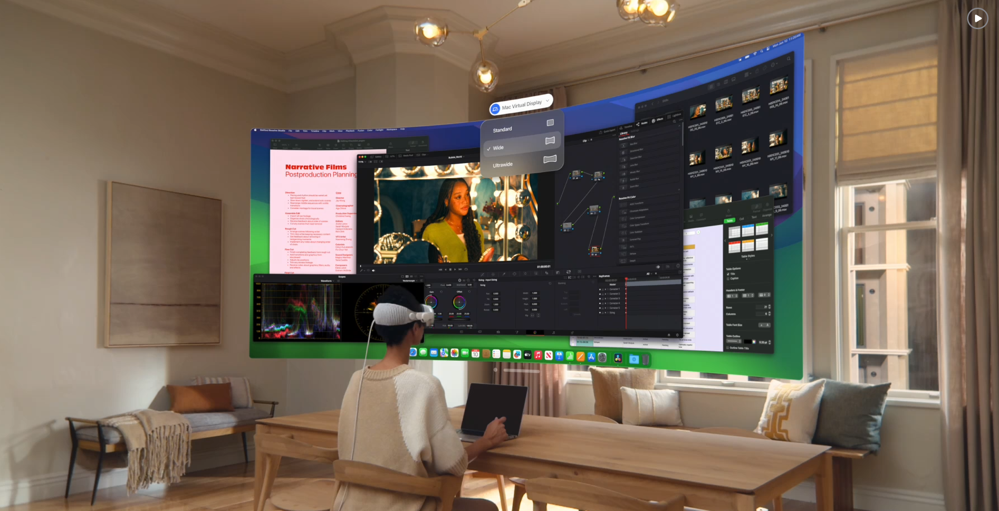

EyeTrackVR / Unity
一项评估不同 VR 多窗口管理界面的眼动追踪研究

图 1：沿用传统 2D 界面样式的常规 VR 桌面。
项目概述
研究动机
窗口管理与多应用窗口间的切换，是现代桌面操作系统中一项极为普遍的功能。 以往研究已经为 2D 桌面界面建立了重要的设计原则，并在常规屏幕 [1] 与大屏幕 [2] 上测试了多种窗口切换界面的呈现方式。
目前的 VR 系统常常将传统 2D 桌面界面直接映射进虚拟空间（图 1），这样可以利用用户对常规用户界面的熟悉度（例如手机界面 [3] ）。然而，这种做法也可能削弱了 VR 在空间界面组织 [4] 与具身交互 [5] 方面的独特优势。
研究问题
由此引出一个重要问题：已有的窗口管理原则在多大程度上适用于 VR 环境，全新的 3D 设计方式是否能够进一步提升用户表现。
研究贡献
本研究致力于探索两个关键维度：首先，我们希望验证已有的桌面窗口管理研究结论（如空间一致性、基于网格的布局以及缩放行为）是否依然适用于 VR 场景——在这一场景中，窗口以悬浮的 2D 平面形式存在于 3D 空间之中。 其次，我们探讨如何利用 VR 在深度感知、周边感知与体积化组织方面的独特能力，设计出超越简单 2D 类比的窗口管理系统。
研究结果将为未来 VR 工作空间的设计提供参考，帮助判断 VR 是否能够超越对桌面隐喻的简单复刻，构建出真正意义上通过改进窗口管理来提升生产力的空间计算环境。 本研究试图回答一个根本性问题：在常见的窗口管理任务中，VR 工作空间能否相较传统桌面计算展现出令人信服的优势。
参考文献
[1] Andrew Warr, Ed H. Chi, Helen Harris, Alexander Kuscher, Jenn Chen, Robert Flack, and Nicholas Jitkoff. 2016. Window Shopping: A Study of Desktop Window Switching. In Proceedings of the 2025 CHI Conference on Human Factors in Computing Systems (CHI '16). Association for Computing Machinery, New York, NY, USA, 3335–3338. https://doi.org/10.1145/2858036.2858526
[2] Lars Lischke, Sven Mayer, Jan Hoffmann, Philipp Kratzer, Stephan Roth, Katrin Wolf, and Paweł Woźniak. 2017. Interaction techniques for window management on large high-resolution displays. In Proceedings of the 16th International Conference on Mobile and Ubiquitous Multimedia (MUM '17). Association for Computing Machinery, New York, NY, USA, 241–247. https://doi.org/10.1145/3152832.3152852
[3] Verena Biener, Daniel Schneider, Travis Gesslein, Alexander Otte, Bastian Kuth, Per Ola Kristensson, Eyal Ofek, Michel Pahud, and Jens Grubert. 2020. Breaking the Screen: Interaction Across Touchscreen Boundaries in Virtual Reality for Mobile Knowledge Workers. IEEE Transactions on Visualization and Computer Graphics 26, 12 (2020), 3490–3502. https://doi.org/10.1109/TVCG.2020.3023567
[4] Steven Feiner, Blair MacIntyre, Marcus Haupt, and Eliot Solomon. 1993. Windows on the world: 2D windows for 3D augmented reality. In Proceedings of the 6th annual ACM symposium on User interface software and technology (UIST '93). Association for Computing Machinery, New York, NY, USA, 145–155. https://doi.org/10.1145/168642.168657
[5] Di Laura Chen, Marcello Giordano, Hrvoje Benko, Tovi Grossman, and Stephanie Santosa. 2023. GazeRayCursor: Facilitating Virtual Reality Target Selection by Blending Gaze and Controller Raycasting. In Proceedings of the 29th ACM Symposium on Virtual Reality Software and Technology (VRST '23). Association for Computing Machinery, New York, NY, USA, Article 19, 1–11. https://doi.org/10.1145/3611659.3615693
计划
我计划从零开始搭建眼动追踪硬件。以下是一个开源眼动追踪项目，可以将市面上主流的 VR 头显改装为具备眼动追踪能力的设备。

如果这个方案行不通，我将使用 Dr. Andrew Duchowski 提供的设备。 在实验设计上，我计划参考文献 [1] 中的界面设计与用户表现评估指标。 面向 VR 原生的多窗口显示设计空间仍有待进一步探索。
进展更新
已开始进行系统性文献综述。
已订购 EyeTrackVR 所需的全部部件，预计 2 月 25 日前到货（大部分从中国发货）。
计划时间线
完成文献综述。3 月 10 日前完成实验设计。开发带有模拟眼动数据的 Unity 项目。
开展实验并进行数据采集
撰写期末论文